汽车总线知识扫盲笔记
前言
汽车行业非常严谨，许多产品都要按照规范设计，首先要搞清楚ISO与SAE的关系。
- 国际标准组织(International Organization for Standardization,ISO)
- 美国机动车工程师学会(Society of Automotive Engineers,SAE)
SAE的J系列标准是为地面交通工具编写的标准，几乎涉及每一个电子元件，面向美国，而ISO是国际标准，国标欧标都会参考ISO的标准。
ISO会参考SAE提供的标准发布新的标准。而且ISO发布的一个标准可能包含多个SAE起草的标准。
汽车内部由许多电子控制单元(Electronic Control Unit,ECU)，分别负责不同的工作，起初它们都使用点对点的通信方式，随着ECU数量的增加，需要消耗的线束也会成倍增加，导致成本增加，占用更多的空间，增加更多重量，而且内部连接也会变得更加复杂，存在更多的隐患。
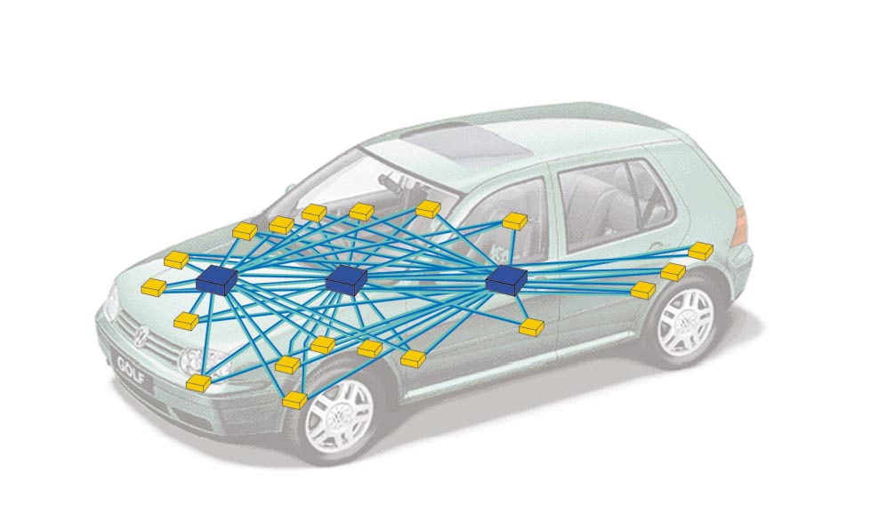
因此工程师们设计了基于总线通信的方案，每个ECU都连接在一条总线上面，避免了点对点通信方式存在的隐患。

现在国内外汽车内部总线网络大多都使用CAN，也有用LIN，MOST，FlexRay，以太网等网络，目前应用最广泛的还是CAN，本笔记以CAN为中心，延伸到各个知识点。
CAN
CAN (Controller Area Network，符合ISO 11898)是控制器局域网络，是制造业和汽车产业种使用的一种网络协议。嵌入式系统和ECU能够使用CAN协议进行通信。
1992年，CAN数据链路层和CAN高速物理层在ISO 11898中已经被国际标准化，由七个部分组成，4、5、6部分稍微看了一下，是对1，2，3的一些缺陷的补充，比较有意义，但是目前国内汽车领域很少使用，所以暂不深入，每部分标题如下：
- ISO 11898-1 数据链路层和物理层信号
- ISO 11898-2 高速接入单元
- ISO 11898-3 低速容错接入单元
- ISO 11898-4 时间触发通讯
- ISO 11898-5 低功耗的高速接入单元
- ISO 11898-6 选择性唤醒的高速接入单元
下图是在不同的角度对CAN的分类，CAN的标准和网络模型层次还有实现的关系。

CAN Physical layer
CAN使用双线差分信号，数据传输在两条线路上：CANH(+)和CANL(-)，这两条双绞线构成串行总线，总线端点加入了终端匹配电阻。采用多主通讯方式，每个节点都通过总线相互连接，对节点数量没有限制，所以报文是广播出去的，所有节点都能收到。
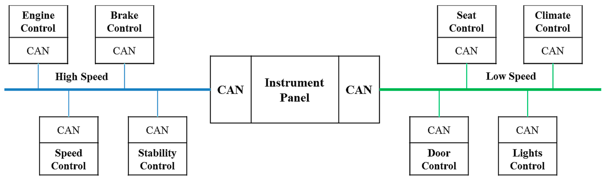
CAN信号的传输方式根据MAU的定义可分为高速CAN(ISO 11898-2)和低速CAN(ISO 11898-3)。
ISO11519是低速CAN的标准。起初，高速CAN数据链路层和物理层都在标准ISO11898中规定，后来被拆分为ISO11898-1（仅涉及数据链路层）和ISO11898-2（仅涉及物理层）。其中标准ISO 11519-2-1994已经在2006年被ISO 11898-3-2006代替了,也就是说符合标准ISO 11898-3的产品也是支持符合ISO 11519-2标准的产品。
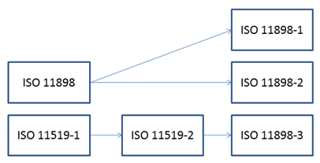
- 高速CAN速率通常是500Kbps或250Kbps，一般用于实时性需求高的通信，如引擎和ABS。
- 低速CAN速率通常是125Kbps，一般用于门锁、灯光、气囊、空调等。
高速CAN的拓扑是线性的，阻抗为120Ω，为了保证传输质量，每个节点之间的距离越近越好。
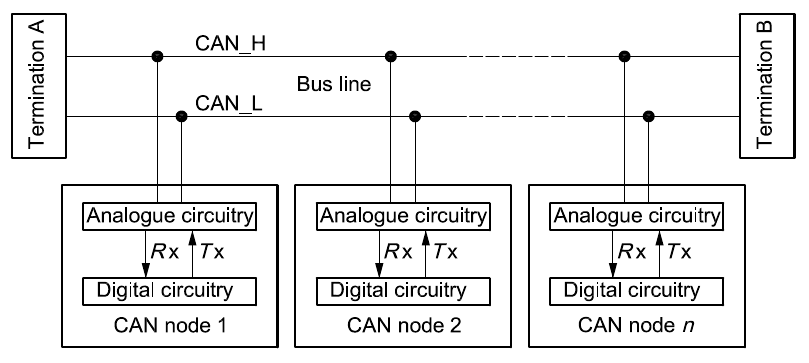
低速CAN的拓扑可以是线性也可以是星状。
一个汽车内的网络拓扑可以有多种网络共同组成，一般用以太网(Internet Protocal)作为主干网。
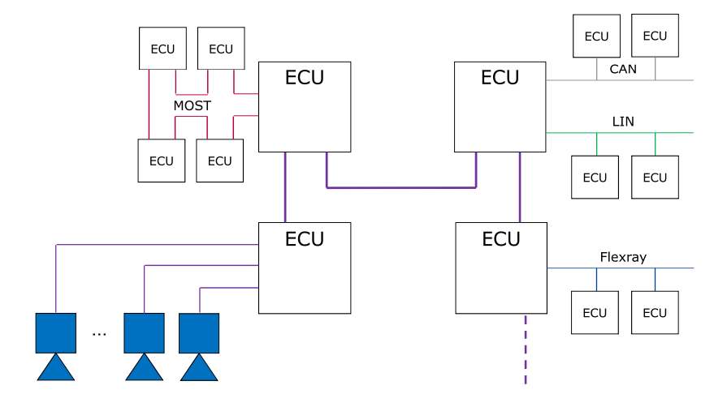
低速CAN又称容错CAN，是因为差分信号本身就有避免共模信号干扰的特性，而且低速CAN电平变化幅度比高速CAN更急，所以容错CAN可以靠单线传输，可以在CAN_H或CAN_L出现短路、断路时保证通信正常。
高速CAN的电平波形图
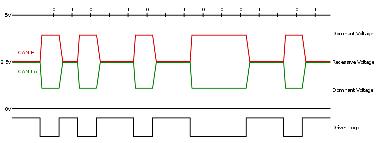
低速CAN的电平波形图
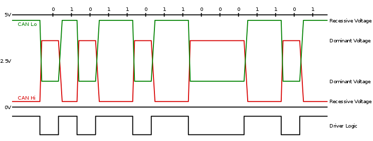
CAN bus可以有两种逻辑状态:显性(recesive)和隐性(dominant)。根据电平可称为显性电平和隐性电平，因此可以把它当作二进制流，显态为0，隐态为1。
当Vcc的标称电压为5V的理想情况下
- 高速CAN：
- 显态：CAN_H 3.5V，CAN_L 1.5V，电位差为2V
- 隐态：CAN_H、CAN_L均是电压2.5V
- 低速CAN
- 显态：CAN_H 3.6V，CAN_L 1.4V，电位差为2.2V
- 隐态：CAN_H 4.7V，CAN_L 0.3V，电位差为4.4V
CAN可以分为高层协议和底层协议，根据OSI七层模型，数据链路层和物理层属于CAN的较低层协议。在此之上的可以称作较高层协议，也可以称作扩展协议。第三层到第六层没有很明确的实现。CAN的扩展协议一般在第七层
CAN协议包括经典的CAN和新推出的CAN FD。
经典CAN即CAN 2.0 A/B，由博世在1993年推出。CAN FD由博世和其他专家在2011年推出。
CAN-based higher-layer protocols
下面是基于CAN的扩展协议(HLP)。
- 1992: CiA 201 series (CAN Application Layer)
- 1994: IEC 62026-3 (DeviceNet)
- 1994: SAE J1939 series
- 1994: EN 50325-4 (CANopen)
- 1999: ISO 11992 series
- 1999: MilCAN
- 2000: IEC 61162-3 (NMEA 2000)
- 2002: ISO 11783 series (Isobus)
- 2004: ISO 15765 series (OBDII/ISO-TP)
- 2007: Arinc 825/826
- 2015: UAVCAN
报文
数据格式
CAN有两种数据包：标准数据包和扩展数据包。
标准数据帧
CAN的有效载荷为8字节，传输速率1Mb/s。CAN FD(CAN with Flexible Data-Rate)有效载荷可以大于8字节，最高64字节，因此传输速率可达8Mb/s。
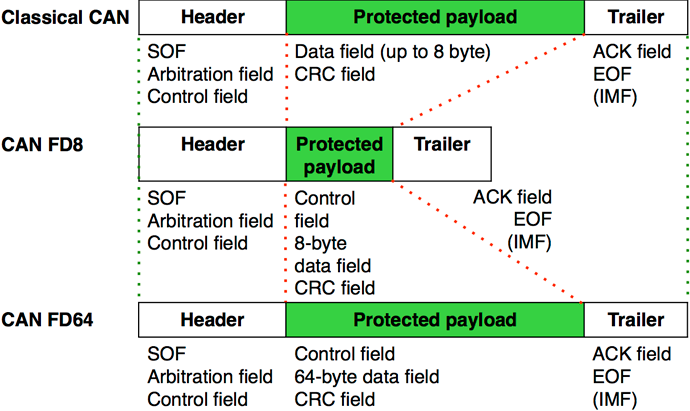
CAN和CAN FD的数据帧结构相同，细节不一样。主要由8个部分组成

- 帧头
- 仲裁域
- 控制域
- 数据域
- 校验域
- 应答域
- 帧尾
- 分隔域
扩展数据帧
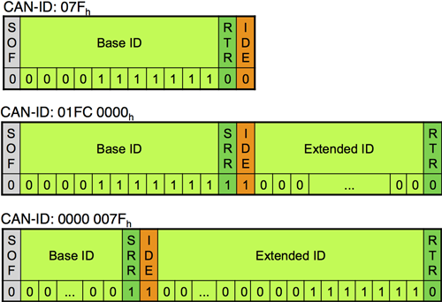
扩展数据包可以链接在一汽形成更长的ID。扩展数据包用替代远程请求(SRR)代替远程传输请求(RTR)，标识符扩展(IDE)也设位1。
CAN有多种检测错误的措施，检查数据帧格式，CRC校验(经典CAN15位，CAN-FD数据长度8到16比特的17位，数据长度20到64比特的21位)，检查填充位，检查ACK。
当多个节点同时广播消息时，为了解决冲突，把具有较高优先级(仲裁域ID越小优先级越高)的节点将成为主节点,一个请求和其对应的响应的ID是一致的。因为ISO 11898-1定义的标准CAN是基于事件触发，在实时性方面不足，在ISO 11898-4里描述了一种基于时间触发的CAN发送机制(TTCAN)，利用不同的时间槽避免消息的冲突，目前还没有被广泛实现。

On-Board Diagnostics
车载诊断(On-Board Diagnostics, OBD)起初用于尾气排放监测。设想起源于美国通用汽车公司开发的专利：装配线诊断链(ALDL,Assembly Line Diagnostic Link)。通过标准化故障诊断码(diagnostic trouble codes, DTCs, ISO 15031-6/SAE J2012)可以快速识别和纠正车内故障。
ISO 15031是车辆和发射相关诊断用外部设备之间通信的规范，总共七个部分
- ISO 15031-1 一般信息和用例定义
- ISO 15031-2/SAE J1930 术语、定义、缩写词和首字母缩略语指导
- ISO 15031-3/SAE J1962 诊断连接器和相关电路的规范及使用
- ISO 15031-4/SAE J1978 外部测试设备
- ISO 15031-5/SAE J1979 排放相关的诊断服务
- ISO 15031-6/SAE J2012 标准化故障诊断码定义
- ISO 15031-7/SAE J2186 数据链路安全
ODB-II
在OBD-I的阶段，不同的厂商的诊断连接器、连接器位置、DTC和数据读写方式都不同。OBD-II标对连接协议等定制了详细的规范。OBD-II连接器符合SAE J1962标准，有公头(A)和母头(B)组成。D形头，16-pin(2x8)。
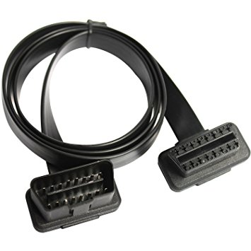

以母头示例，引脚定义如下图
在接CAN的条件下，4是外壳接地，5是信号接地，6是CAN_H，14是CAN_L，16是12v直流电源正极。15031-3也定义了其他协议（ISO 14230,SAE J1850）总线的引脚。
现在车载诊断主流的标准是ODB-II(ISO 15765)，是基于CAN的扩展协议。1996年美国要求所有汽车都要实现OBD-II，2003年欧盟要求所有汽车都要实现EOBD(几乎和OBD-II一样)，2006年国III标准要求汽车要带有OBD，便于检测尾气排放。所以现在几乎所有汽车都配有OBD接口，一般在主驾驶舱的底部。
ODB-II规范分为四部分：
- ISO 15765-1 介绍一般信息
- ISO 15765-2 网络层服务规范（ISO-TP）
- ISO 15765-3 应用层规范，UDS在CAN的实现规范。
- ISO 15765-4 物理层到网络层的规范 会话层
把ODB-II按照OSI七层模型划分，可以分为三类
- 诊断服务，详细参考ISO 15765-3
- 网络层服务，详细参考ISO 15765-2
- CAN服务，详细参考ISO 11898
UDS
参考表格对比，右侧是法律要求统一的车载诊断规范,左侧是厂商可定制的增强型诊断(Enhanced diagnosic)，在应用层实现了模块化诊断框架，面向所有ECU，称之为统一诊断服务(Unified Diagnostic Services,UDS)。

下图是UDS在CAN上面的实现，标记了每一层用到的规范。其中UDS规范就是ISO 14229。
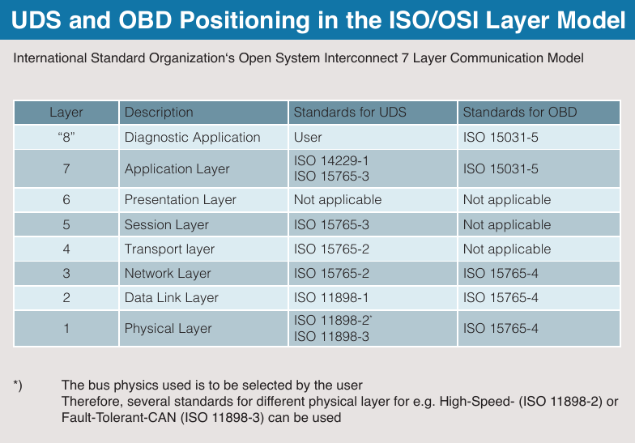
UDS为每个的服务的请求和响应定义了不同的ID
腾讯破解特斯拉给ECU发消息就使用到了UDS，这一部分需要深入，将在下一篇笔记详细学习。
相关资料
CiA: https://www.can-cia.org/can-knowledge
Wiki: CAN bus
ZLG致远电子:一文读懂容错CAN！
Wiki: On-board diagnostics
Wiki: Unified Diagnostic Services
UDS - ISO 14229 Info - Softing Automotive
ISO 11898
ISO 14229
ISO 15031
ISO 15765
SAE J1962